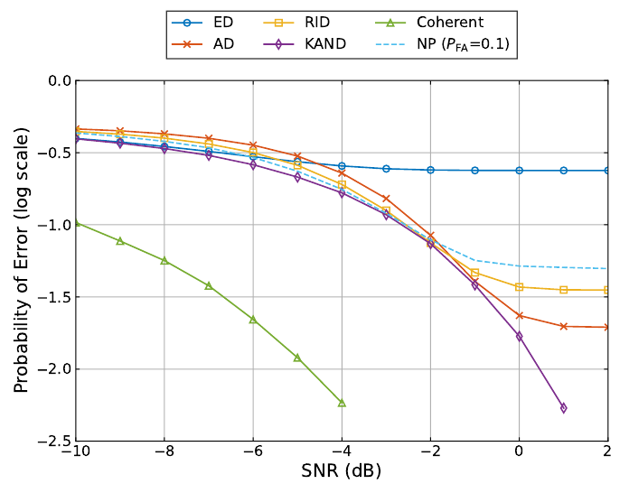
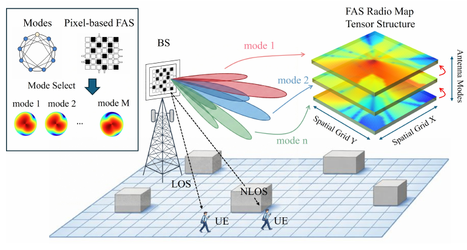
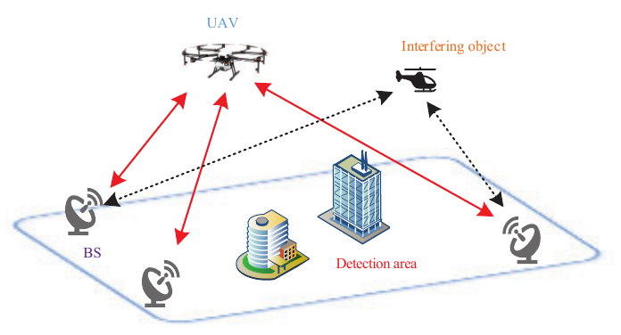

Mu Jia
 |
Mu Jia |
About Me
I am a Ph.D. candidate in the School of Artificial Intelligence at CUHK-Shenzhen, supervised by Prof. Junting Chen and Prof. Pooi-Yuen Kam. I was a MSc in HIT-Shenzhen supervised by Prof. Tingting Zhang, and a BEng in UoG and UESTC supervised by Prof. Francesco Fioranelli, Prof. Julien Le Kernec and Prof. Jianguo Huang.
News
September 2026: I transferred to the newly established School of Artificial Intelligence (SAI) at CUHK-Shenzhen.
June 2026: I passed my Ph.D. qualifying examination (QE).

Error vs. SNR (N = 32; Fig. 3).
Noncoherent Detection of Constant-Envelope Signals for Mobile Edge Applications – Asymptotically Optimal Detectors and a Reliability-Based Intelligent Detector
We study how small wireless devices can detect constant-envelope signals using only received magnitudes. The work derives energy and amplitude detectors for different SNR regimes and combines their decisions with an offline-calibrated reliability rule that needs no instantaneous SNR at runtime.

Pixel-based FAS radio map model, from Fig. 1.
Physics-Aware Tensor Reconstruction for Radio Maps in Pixel-Based Fluid Antenna Systems
We reconstruct radio maps for pixel-based fluid antennas from sparse measurements by combining low-rank tensor structure with antenna physics. The method uses predictable gain differences across antenna modes to recover spatial detail and shadowing boundaries, supporting radio-map-based mode selection.

Collaborative UAV detection with multiple base stations (Fig. 1).
UAV Detection and Localization: A RF-Based Framework via Multiple Stations Collaboration
Co-first authors: Tianhao Liang and Mu Jia (equal contribution).
We use existing cellular base stations to jointly detect and locate low-altitude UAVs. The framework combines micro-Doppler recognition with multi-station measurement fusion to suppress ghost targets, while reinforcement learning balances localization accuracy and the number of participating stations.
Education
PhD, Computer and Information Engineering, The Chinese University of Hong Kong, Shenzhen, 2023 – present.
Research Topic: Signal detection and estimation, Radio map, Statistical signal processing.
MSc, Electronic and Information Engineering, Harbin Institute of Technology (Shenzhen), 2020 – 2023.
Research Topic: ISAC, Localization, Wireless sensor network, Resource allocation.
BEng (first-class honours), Electrical and Electronic Engineering, University of Glasgow, 2016 – 2020.
Research Topic: Micro-Doppler features, Machine learning, Radar signal processing.
BEng (top 10%), Electrical and Electronic Engineering, University of Electronic Science and Technology of China, 2016 – 2020.
Research Interests
Signal detection and estimation
Radio map construction and application
Integrated sensing and communications
Wireless sensor network
Resource allocation
Deep learning based radar signal processing